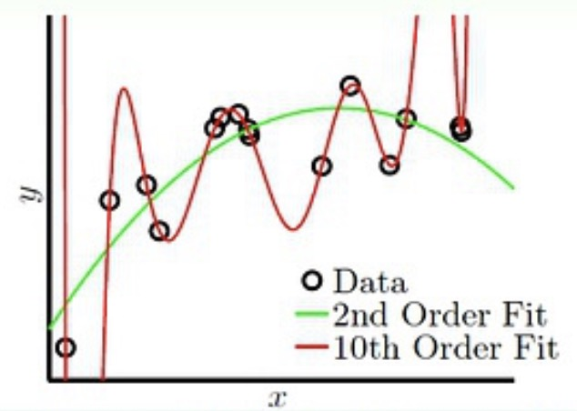
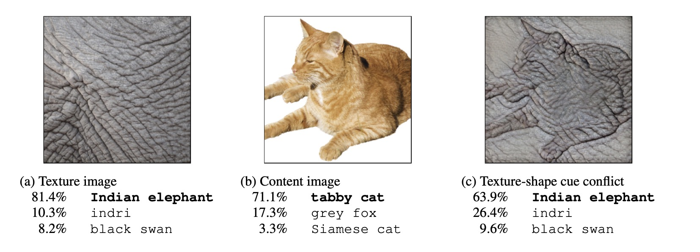

泛化性
我们训练网络的目的在于，希望机器学习模型对新数据的预测能力强。 就好像我们人类在知道什么是人类之后，在街上遇到没见过的人，仍然知道他是一个人，而非某种动物。 这听上去好像很简单，但机器学习却经常犯这种错误，比如说你给网络输入一些猫的图片，在见训练集之外的猫的时候就认不出来了。
所以我们希望网络泛化性强，就是说在训练集上能达到很高的准确率，在预测未知数据集时依旧能有很高的准确率。 反之如果网络泛化性弱，就说明他在训练集上准确率很高，但是预测未知数据时表现的一塌糊涂。
泛化性差的原因
1、模型复杂度过高。 这种常会导致过拟合问题，具体下节会讲。简单说就是网络过度拟合训练数据，从而无法很好地适应新数据，导致泛化性差。 例如下图，本来数据呈现二次分布，但是当使用高阶函数拟合的话，训练集就会完全学到每一个数据的分布，但是测试时候数据依旧是二次分布， 如果还用高阶函数测试得到的结果就会偏差很多。

2、数据量过少 这种是因为网络其实是一个蛮笨的脑子，他必须要见好多好多样本，比如说要认识猫，必须见上百张猫的图片才能知道”奥，原来这种带毛的小小的四条腿的动物是猫啊”。 如果你只给他输入几张，反而他很难学会什么是猫。
3、数据不平衡
这种很好解释，比如训练时候你有成百上千张20，50，100面额的人民币，但只有两张5元，让网络学习”钱”的概念，结果测试时候用5元纸币测试是否为钱。 网络光顾着记哪些大额人民币什么特征，完全没注意5元的特征，就预测错误了。
4、噪声数据 噪声数据你可以简单理解为”错误的数据”。还比如让网络学习猫，你1000张数据里，900张都是猫，100张是狗。结果测试的时候肯定网络容易把狗当作猫。 你可能会说怎么数据集会有这种问题，其实对于大规模数据集，很多都是靠爬虫收集的，有错误的数据很正常。
5、特征提取不足 这一点必须要引入下面这张经典的图像了。 
中间的猫网络可以正常识别，但如果给他换个大象的皮肤，制作成右边的图像，网络就会将它归类为大象。 但对于你来说，你肯定能认出右图是猫，这说明网络并不是通过提取轮廓特征来对物体分类的，而是仅学习猫的纹理，有种”管中窥豹”的蠢萌。 所以对于这种网络我们认为他特征提取不足，因此在遇到新训练集时，很容易识别错误。
解决方法
针对以上原因，对应的解决方法如下：
1、减少模型复杂度：减少模型的复杂度可以避免模型对训练数据的过拟合，提高模型的泛化能力。
2、增加数据量：增加数据量可以帮助模型更好地学习数据的真实分布，从而提高模型的泛化能力。
3、数据平衡：保证训练数据集中各个类别的数据量均衡，可以避免模型对数量较多的类别的过度拟合，提高模型的泛化能力。
4、数据清洗：去除训练数据中的噪声和异常值，可以避免模型对这些数据的过度拟合，提高模型的泛化能力。
5、特征工程：对原始数据进行一些预处理和特征提取，从而提高模型的泛化能力。比如上面的象皮猫，我们提取猫的轮廓训练网络，